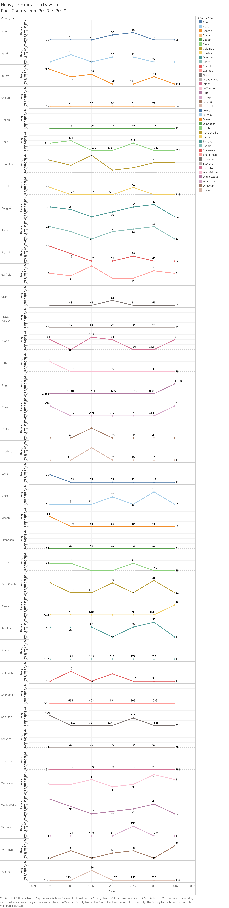
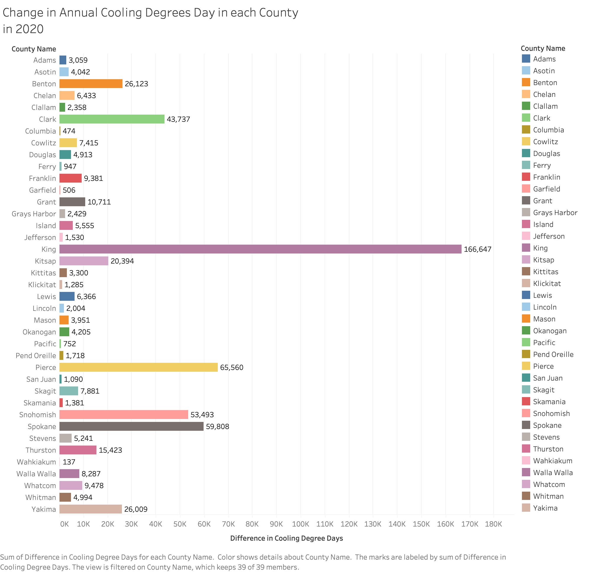
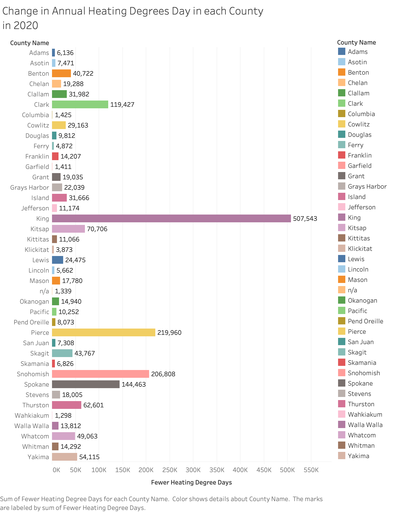
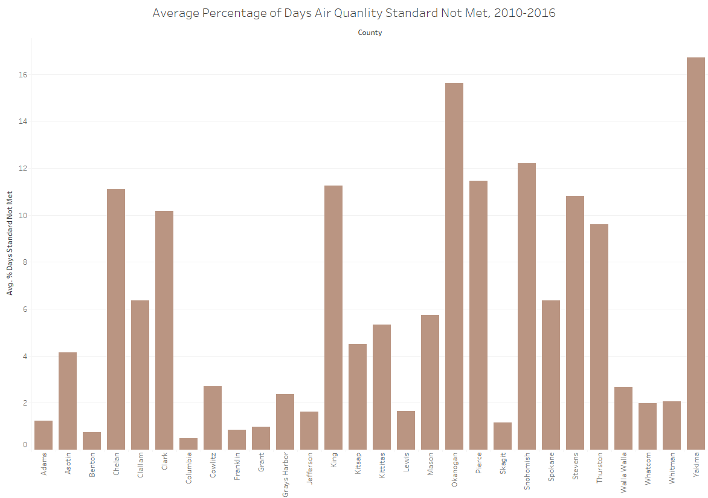
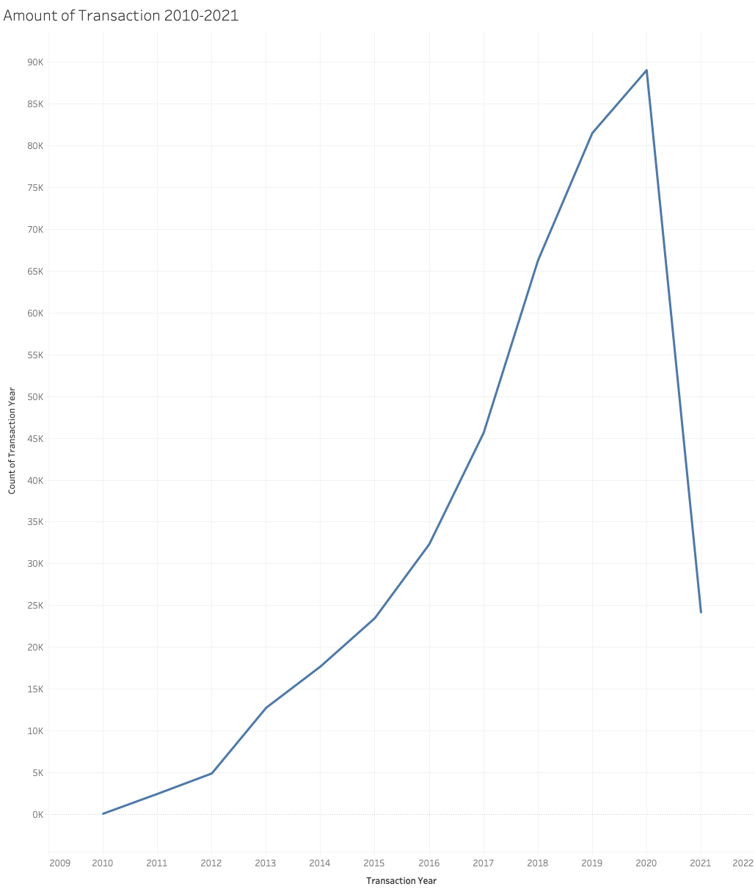
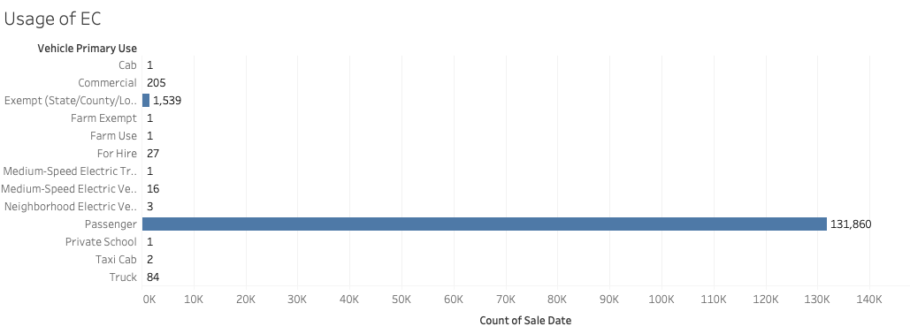
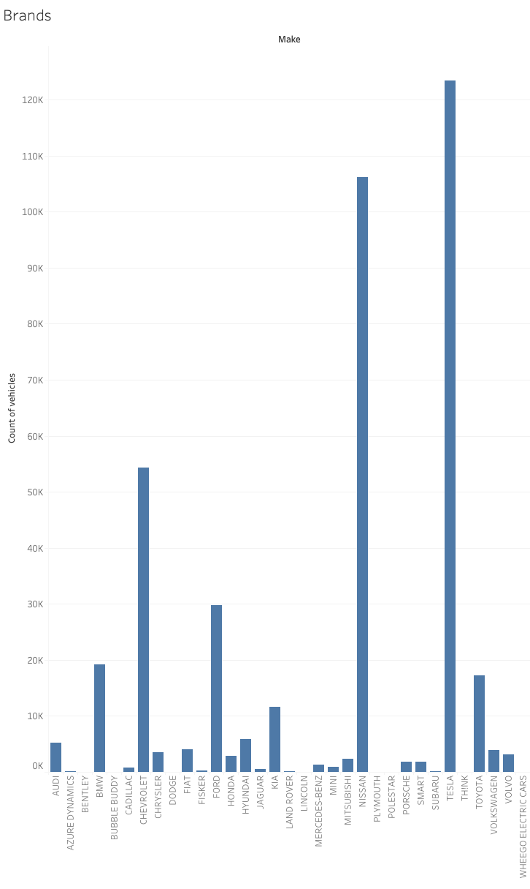

Washington State Environment Change Over Time
Temperature, air quality, and electric-cars related
Abstract
In this project, we explore the intersection between climate, air quality, and energy use as it pertains to transportation across Washington state. We first examine trends in climatic variables such as precipitation, temperature, and annual cooling and heating days over time. Next, we take a look at Washington state air quality, and how that relates to diesel use in transportations. Additionally, we study what the public health effects of poor air quality (i.e., allergies) may be. Finally, we take a look at the use of electric cars, and the feasibility of increasing usage of electric cars (based on income and cost) across the state.
Climate
Heavy Precipitaion
For the heavy precipitation, we’ve created visualizations showing how the heavy precipitation changes from 2010 to 2016 in counties in Washington State. The visualization shows the sum of different census tracts in each county.
This image shows every county in Washington State. However, this visualization appears to be quite long because there are many counties in Washington State, and the counties are divided into many different census tracts. Therefore, we would probably change the visualization to scrolling type later on. (Scrolling by year or county)

This is a snapshot/example of one of the counties(zoom in version and separate by census tract).

This is a snapshot/example of another county(zoom in version and separate by census tract).
Annual cooling&heating
There are two visualizations in this section. One visualization shows the change in annual cooling rate in each county in 2020, and the other one shows the change in heating rate in each county in 2020. CDD represents the cooling degree days and HDD represents the heating degree days. Both are calculated using a day’s average temperature and a baseline temperature of 65 degrees Fahrenheit.
The two visualizations are the sum of census tracts in each county. Some counties have many census tracts, so the two visualizations add up all the census tracts in that county.
The change in annual cooling degree days in each county in 2020. If the day’s average temperature is 65 or below, the value is 0, and this indicates no need for cooling. For example, in Adams county, there are five census tracts, but I combined the five census tracts, so the change in total annual cooling rate is 3059 degree days.
The change in annual heating rate degree days in each country in 2020. If the day’s average temperature is 65 or above, the value is 0, and this indicates no need for heating. For example, in Adams county, there are five census tracts, but I combined the five census tracts, so the change in total annual heating rate is 6136 degree days.
For the two visualizations, King county is the one that has the most change in total annual cooling and change in total annual heating.
Air Quality
Annual average PM2.5 Concentrations

This map visualization shows the total annual average PM2.5 concentrations reported from each county in Washington through 2010 to 2018. It is obvious that Okanogan has the highest total concentration through these years and Pend Oreille has the lowest total concentration. There are three counties showing in grey due to the missing data.
Air quality not met standard
In this section, we compute the air quality in two different views that the first one shows the comparison of average values while the second one shows the comparison of the total values.
This bar chart visualization shows the average percentage of days recorded since 2010 to 2016 that have not met the standard of air quality separated by each county in Washington state. Yakima county tends to have the highest average percentage value means that Yakima has a higher frequency of poor air quality.

Then we compare the total numbers of days that did not meet the standard of air quality for each county by visualizing them geographically. From the graph, we can clearly see that Yakima and Okanogan have extremely large numbers of days not meeting the standard, which means that those two counties have poor air quality.
By comparing these two visualizations, we concluded that both results illustrate that Yakima county has the highest frequency and rate of bad air quality during 2010 to 2016.
Diesel Emission
The air quality can be influenced by many factors. As the PM 2.5 is one of the main pollutants, then we also considered that diesel emission would take a great part as the pollutant to the air quality.
Allergy caused by PM 2.5

Now we try to explore how many people might be affected because of poor air quality in each county. To do so, we find the data that counts the number of people allergic to PM 2.5 in each county. Based on the lind chart we made, we discover the top 7 counties that have large numbers of people being allergic to PM 2.5 among all counties in Washington state. Particularly, King county always has the largest number since 2010 even though it has a significant drop in 2015.
Electric Car
Amount of Electric Car Transactions (2010-2021)
The visualization shows an increasing amount of electric car transactions since 2010. The dip from 2020-2021 occurred because the data only goes to March of 2021 rather than the entire year.
(Suggested change: We should use animation to demonstrate this visualization to further emphasize the growth component.)
Amount by County(2010-2020)

The visualization shows the electric car transaction trends in different counties. We omitted 2021 because data only goes to March.
(Suggested change: We should make an interactive version where the audience can choose the counties they want to view in a single window. We can also add a brush so they can examine particular years.)
New/Used Cars Preference

The visualization shows that preference in new/used cars from 2010-2020. We see a dip in the transaction of new electric cars from 2018-2010. Why did the dip occur? Was there a policy that subsidized used electric cars?
(Suggested change: Use animation to illustrate the trend over time.)
Use of Electric Cars
The visualization demonstrates the primary use of the vehicle. Most people use it for daily purposes (passenger).
(Suggested change: Use animation to depict the increase.)
Year of Electric Car Model

The visualization depicts the year of electric car models owned by people in WA. Most people purchase car models produced after 2011.
(Suggested change: We can make it interactive so the audience could select the transaction year and look at the preference in that particular year.)
Preference of Car Maker
The visualization demonstrates the preference of car makers from 2010-2021. Most people prefer Tesla and Nissan.
(Suggested change: Add an interactive component so people can select the year and see the preference of that particular year.)
The Change in Preference of Car Maker

The visualization demonstrates the change in preference in car makers over time.
(Suggested change: Add an interactive component where the user could select certain makers and observe closely. We should put them in the same window as well. We can use animation initially to demonstrate the change over time.)
Fuel Type Change over time

The visualization shows preference in the fuel type of the car. An increasing number of people prefer battery electric vehicles rather than Plug-in hybrid vehicles (PHEVs). PHEVs use batteries to power an electric motor; use another fuel, such as gasoline or diesel, to power an internal combustion engine.
(Suggested change: Put it in the same window and use animation to depict the trend.)